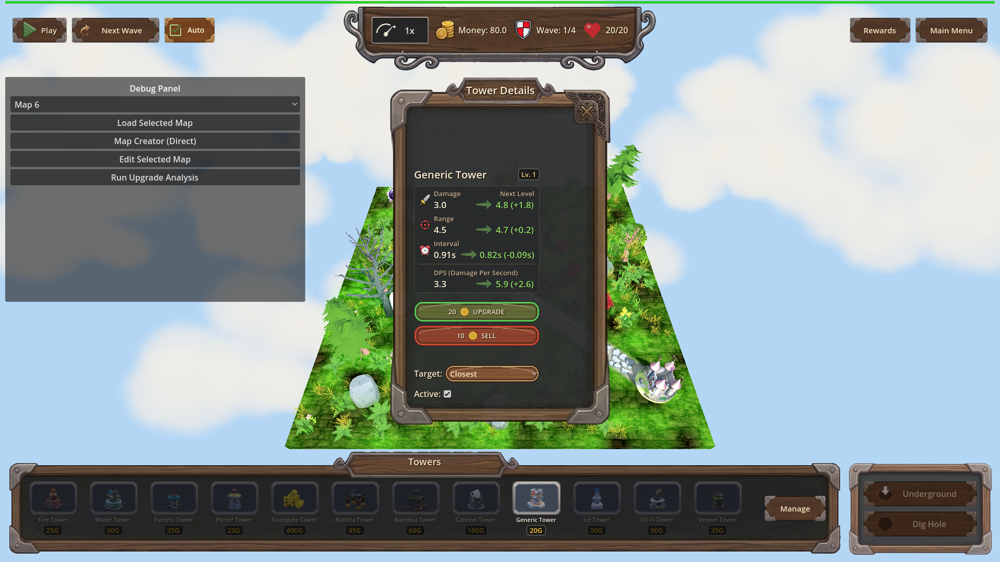
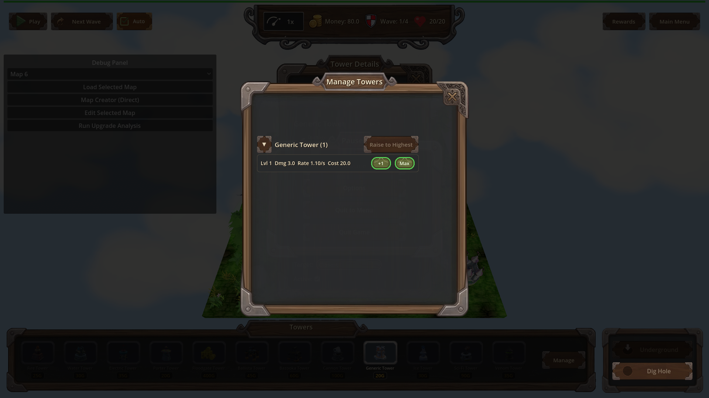
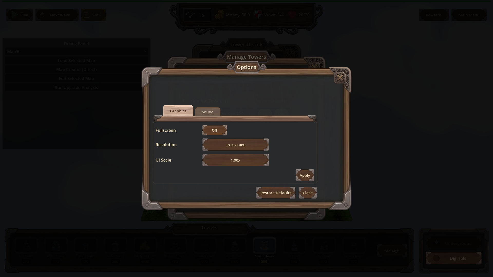

Manual Test Report – req-136 padding-closable-panels-close-button
Summary
- Result: PASSED
- Tested on: 2026-08-22, windowed Godot 4.4.1 (gl_compatibility, llvmpipe software GL), Linux worker
- Scenario: tests/scenarios/hud_other_panels.json (windowed run)
- Tester: Manual-tester profile
Ran the hud_other_panels screenshot scenario windowed via the project runner
(`godot --path . res://scenes/Main.tscn --rendering-method gl_compatibility --audio-driver Dummy -- --harness=res://tests/scenarios/hud_other_panels.json`).
Harness result: status=pass, exit 0, all actions ok, expectation `game_state == paused` met.
The debug log also showed the new reservation line twice:
`[TITLED_PANEL] ManageTowersPanel reserves 90px of right padding for the close corner`
and `[TITLED_PANEL] Panel reserves 90px of right padding for the close corner`.
All four panel screenshots were inspected visually: no content overlaps or touches
the corner ✕ on any closable panel.
Scenario Walkthrough
### Step 1 – Tower details panel
- Action: Loaded map_1, placed a generic tower at (-6, 0, 2), selected it, opened tower details; screenshot `panel_tower_details`.
- Expected: Panel content (header "Generic Tower", Lv.1 badge, stat rows, Upgrade/Sell buttons) clear of any corner ✕.
- Observed: The tower details panel correctly carries **no** ✕ (it is non-closable in this build). Content lays out normally with no clipping. The placed tower is visible on the map behind the panel.
- Status: PASS

### Step 2 – Pause menu overlay
- Action: Opened the pause menu; screenshot `panel_pause_menu`.
- Expected: Pause menu buttons clean, no regression around corner ornaments (pause menu has no close button).
- Observed: Resume / Options / Quit to Menu / Quit Game buttons are vertically stacked and centered inside the frame; silver corner ornaments sit on the outer frame only and touch no buttons. No visual regression.
- Status: PASS

### Step 3 – Manage Towers overlay
- Action: Opened Manage Towers over the pause menu; screenshot `panel_manage_towers`.
- Expected: Group list rows and cost text not running under the ✕.
- Observed: The ornate metal ✕ is flush at the panel's top-right corner. The nearest content ("Raise to Highest" button) sits below-left of it with clear empty space; cost text (`Lvl 1 Dmg 3.0 Rate 1.10/s Cost 20.0`) and upgrade buttons are far from the corner. No overlap.
- Status: PASS

### Step 4 – Options screen
- Action: Opened Options from the pause menu; screenshot `panel_options`.
- Expected: Option rows/toggles clear of the ✕.
- Observed: The metal ✕ chip is flush at the Options window's top-right outer corner. Fullscreen / Resolution / UI Scale rows and the Apply button sit lower and left of it with visible breathing room; nothing touches the ✕. Restore Defaults / Close remain at the bottom.
- Status: PASS

Criteria
- On the Manage Towers panel and the Options screen, no visible content intersects the CloseChip rect after layout.
-
-
- On a closable panel built like the tower details panel (UpgPanel), every visible content control lies fully outside the CloseChip rect once laid out — covered by the focused unit test (31 ok / 0 failed per changes.md); in this windowed build UpgPanel carries no ✕ and its content shows no clipping:
-
- Debug-build `[TITLED_PANEL]` log line when a closable panel applies its content-padding reservation, naming the panel and reserved inset — confirmed in run log (ManageTowersPanel, 90px).
- CloseChip flush top-right + single close_requested contract: covered by unit tests (not re-proven by stills here); visually the ✕ is flush top-right on Manage Towers and Options shots above.
Issues and Observations
- Low: The tower details (UpgPanel) panel does not show a ✕ in the live game, so the player-facing proof of the fix rests on Manage Towers and Options plus unit tests. Not a bug — just where the evidence lives.
- Low (pre-existing): invalid-UID warnings for HudTheme textures and several missing GLB models (portal arch, backdrop earth, ruined house, Generic_lv1.glb) spam the log; unrelated to this change.
Recommendation
Ready. All four panels render cleanly with no content/✕ overlap; harness run passed and the debug log confirms the 90px reservation is applied. No code fixes needed.
Manual-test result: PASSED. Scenario: tests/scenarios/hud_other_panels.json. Report: .gen/manual-report.md. Escalation: no.